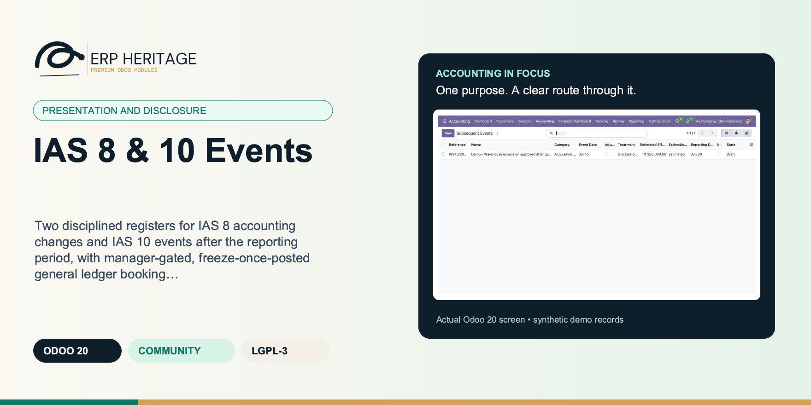
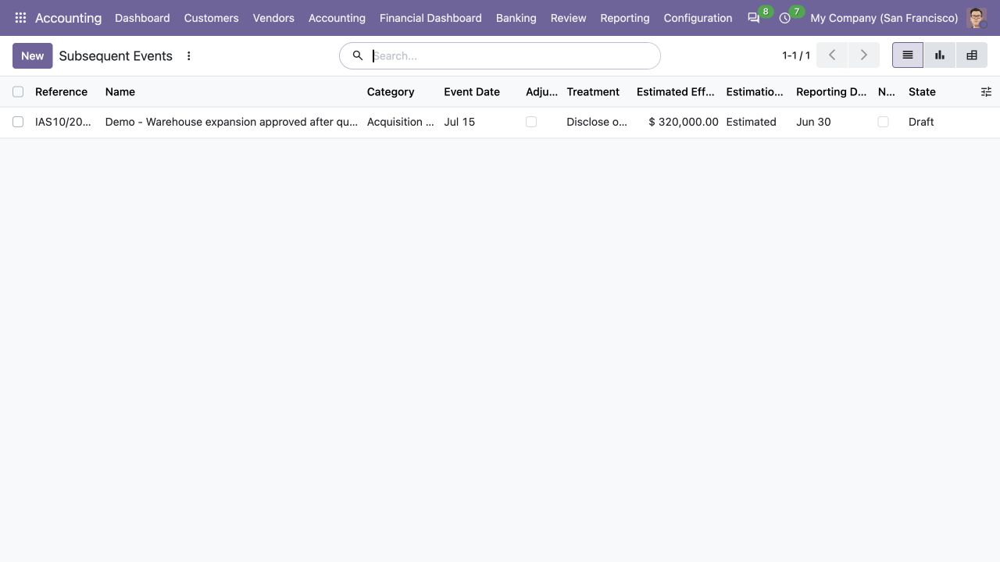
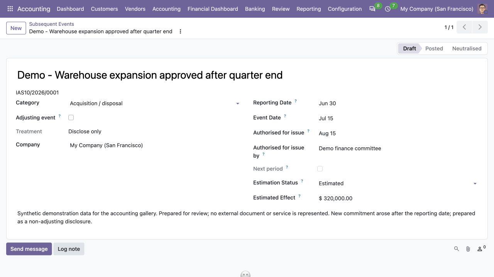
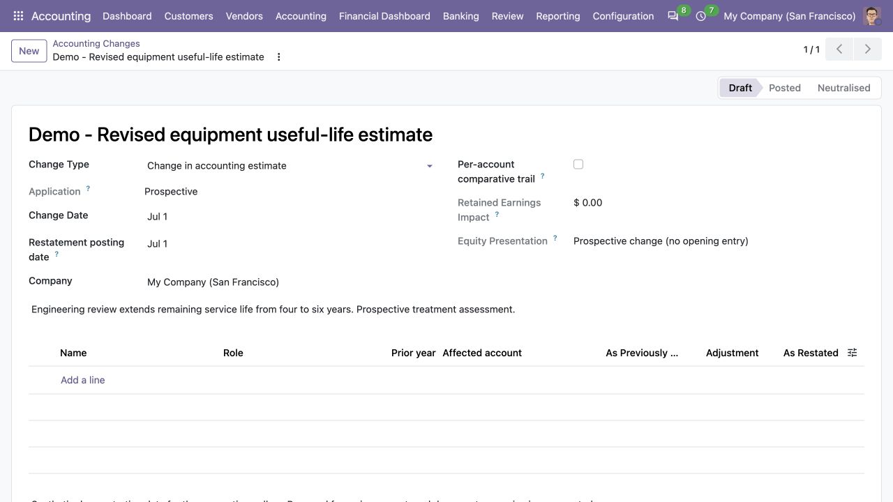
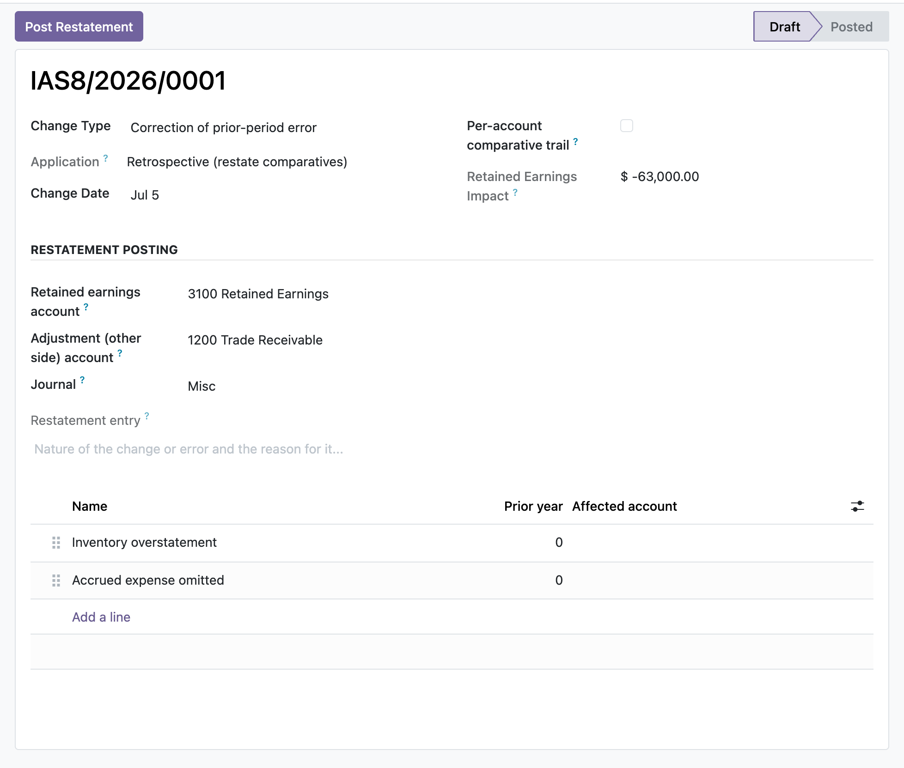

ERP HERITAGE / ODOO 20 COMMUNITY
Two disciplined registers for IAS 8 accounting changes and IAS 10 events after the reporting period, with manager-gated, freeze-once-posted general ledger booking of the restatement and the adjusting entry.
LGPL-3 · Odoo 20 · v20.0.1.2.10 · Module guide, setup, workflows and rollout checks
The purpose
This module maintains two linked registers. The IAS 8 register records a change in accounting policy, a change in accounting estimate, or the correction of a prior-period error, deriving retrospective versus prospective application from the change type, and building a per-line restatement trail of as previously reported, the adjustment, and the restated amount that totals into the opening retained-earnings impact. A separate restatement posting date identifies the opening-balance accounting date and an equity-presentation classification distinguishes retrospective application, error restatement, and prospective change. A retrospective change books one balanced opening-equity journal entry: in comparative mode, its affected-account line labels retain the entered prior-period labels, but the module does not create a separate posting for every prior period or regenerate prior statements. The IAS 10 register accepts only events strictly after the reporting date and, when an authorisation date is entered, on or before that cutoff. A later event is refused and must be registered against the following reporting period. The register computes adjusting or disclose-only treatment, records a company- and event-date-derived reference, captures who authorised the statements for issue, and distinguishes an estimated effect from a disclosure that the effect cannot be estimated. An adjusting event inside the window can book its balanced entry to the reporting date. Every posting is restricted to an EH Accounting Manager and is frozen once posted, correctable only through a Reset to Draft that reverses the entry. EH Accounting Users can work in both registers and EH Auditors receive read-only navigation matching their ACLs.
Inside Odoo 20
Captured from Odoo 20 Community using synthetic demonstration records. Configuration screens show the available workflow; external service connectivity still requires the relevant provider setup and validation.

Draft subsequent-events register records classification, reporting date and estimated financial effect.
Captured 2026-09-22 from isolated Odoo 20 Community database with synthetic demonstration records. No external submission or live banking activity is represented.

Non-adjusting warehouse commitment is prepared as a disclosure-only draft with authorization details.
Captured 2026-09-22 from isolated Odoo 20 Community database with synthetic demonstration records. No external submission or live banking activity is represented.

Draft useful-life estimate change records prospective treatment and the supporting assessment.
Captured 2026-09-22 from isolated Odoo 20 Community database with synthetic demonstration records. No external submission or live banking activity is represented.
Inside this module
Each affected line item carries as previously reported, the signed adjustment, and the computed restated amount, and the register totals those adjustments into the opening retained-earnings impact, so the disclosure and the figure that hits equity come from the same lines.
Adjust-or-disclose is computed from whether the event evidences conditions existing at the reporting date. A dividend declared after year end cannot be marked adjusting, a constraint blocks it, because it is a non-adjusting event that is disclosed, not recognised as a liability.
Booking is restricted to an EH Accounting Manager. Once posted, the driving fields and lines are locked, deletion is refused, and the only correction path is Reset to Draft, which posts a reversal and reopens the record so nothing drifts away from its ledger entry.
A dividend declared after the reporting period cannot be flagged as an adjusting event; a validation constraint refuses it, because IAS 10.12-13 treats it as non-adjusting, disclosed and not recognised as a liability at the reporting date.
A change in accounting estimate is derived as prospective and is refused for posting; only retrospective policy changes and error corrections can book an opening retained-earnings restatement (IAS 8.36).
Adding a restatement line to an already posted change is blocked at create time, not just on write and unlink, so the stored retained-earnings impact cannot silently drift away from the posted journal entry.
A posted restatement or adjusting event cannot be deleted or raw-reset through the ORM; both legs stay in the ledger and the only way out is a manager reset that posts a reversal, preserving the audit trail.
Both the single net plug and the per-account comparative trail derive one balancing opening retained-earnings leg from the summed adjustments, and a zero net impact is refused rather than posting an empty entry.
From input to outcome
Register the accounting change or subsequent event with the dates and classification evidence needed for its supported treatment. Gather change type, reporting date, authorisation date, affected amounts, comparative labels and posting choices. Use a representative case with a known expected result so the team can separate configuration decisions from unexpected behaviour. Keep the supporting commercial or accounting evidence available during review.
Build the retrospective adjustment trail or event assessment, separating estimated effects from matters that cannot yet be quantified. Follow the record’s available actions in the order intended by the workflow. Review the selected company, relevant dates and any validation messages before continuing. If the source data changes, reassess the result against the updated evidence.
An accountant records a prior-period error in the IAS 8 register, entering each affected line as previously reported and its adjustment; the restated column and the opening retained-earnings impact compute as they type. A manager sets the retained-earnings, adjustment and journal accounts and posts the restatement, which is sealed to the general ledger. Separately, a litigation settlement that landed after the reporting date is logged in the IAS 10 register as an adjusting event and booked to the reporting date, while a dividend declared post year-end is left disclose-only because the register refuses to make it adjusting. Later a figure needs correcting, so the manager resets the restatement to draft, the module reverses the original entry into the ledger, edits reopen, and a corrected restatement is re-posted.
Review the effect on opening equity and the proposed posting date, or document the disclose-only outcome. Compare the outcome with the expected treatment for this case and record the reason for any difference that requires follow-up. Give exceptions an owner so they do not disappear inside a period-end spreadsheet.
Keep the authorised financial-statement release date and governance decision with the file; the register does not automatically rebuild every comparative statement. Include the accepted operating example, configuration choices and unresolved dependencies in the handover. Review them when business policy, source data or the surrounding Odoo applications change.
Product views
Product screenshots supplied with this module. Records and amounts are illustrative; appearance can vary with your configuration and release.

Prior-period restatement trail
Business situations
IAS 8 & 10 Events is relevant to financial-reporting teams assessing closing and subsequent information who need to answer this question: Does this matter change prior-period presentation, current estimates, recognition or disclosure after the reporting date? Start with the process that creates the decision, identify its owner and agree what evidence the reviewer needs. A narrow pilot helps the team evaluate the supported workflow using its own accounting data before broadening access.
Use the module’s presentation and disclosure role as one part of a controlled close. Bring the relevant change type, reporting date, authorisation date, affected amounts, comparative labels and posting choices to the review, then explain the result alongside the business event it represents. Establish which outputs become part of the reporting pack and which outstanding matters need a separate accounting decision.
Turn the business question into an acceptance case: Does this matter change prior-period presentation, current estimates, recognition or disclosure after the reporting date? Use one ordinary example and one relevant exception from the supported scope below. Ask the intended operator to prepare it and the reviewer to explain the result. Retain that accepted example with the deployment notes so future changes can be assessed against an understood process.
Before the first result
Confirm that the organisation needs the supported presentation and disclosure process described here. Identify the responsible financial-reporting teams assessing closing and subsequent information and write down the decision they expect the module to support. Use the limitations section to separate shipped behaviour from an integration, professional judgement or operational service that needs another owner.
Prepare change type, reporting date, authorisation date, affected amounts, comparative labels and posting choices. Check the relevant records in the intended company and use dates that match the business event. Resolve missing accounting configuration before evaluating calculated output; plausible-looking totals do not establish that the chosen inputs or policies are correct.
This module declares Accounting Suite Base as part of its installation foundation. Its direct standard-Odoo dependencies are account, mail. Review the actual dependency set in the target database before a rollout, especially where another addon also extends the same accounting models, menus or posting actions.
Define who operates IAS 8 & 10 Events, who reviews unusual results and who maintains configuration. Run the representative workflow below in a test database using the intended users. Confirm that users can reach the work they own and that the reviewer understands the available evidence before moving the process into live operation.
Workflow reference
IAS 8 register with change type, explicit restatement posting date, equity-presentation classification, comparative lines and computed opening retained-earnings impact; company-scoped references use the change date for IAS8/year/nnnn.
IAS 10 register with company-scoped IAS10/year/nnnn reference, reporting and event dates, authorising person/body, explicit estimation status, financial effect and derived treatment.
Post Restatement action builds one balanced opening-equity entry. Comparative mode posts one affected-account leg per entered line and retains prior-period labels in line descriptions; it does not create separate entries per prior period.
Book Adjusting Entry action posts a balanced entry to the reporting date for an adjusting event with an estimable positive effect; reset posts a reversal.
Working navigation for EH Accounting Users, read-only navigation for EH Auditors, dedicated searches, posted-state read-only lines and manager-only posting controls.
EH user, auditor and manager ACLs plus global company-isolation rules on all three models.
Accounting date for the opening-balance restatement. Use the opening of the earliest comparative period presented when IAS 8 requires retrospective application or restatement. For backward compatibility it starts from the change date, but it is a separate, explicit posting decision.
Statement-of-changes-in-equity classification. Policy changes are tagged as retrospective application, prior-period errors as retrospective restatement, and estimate changes as prospective with no opening-equity posting (IAS 1.106(b), IAS 8.22 and 42).
When set, each restatement line carries its affected account and prior period; posting books the opening retained-earnings restatement per affected account across the prior periods (IAS 8.22, 42), instead of one lumped adjustment. Leave off for the single net opening-retained-earnings plug.
Affected-item rows determine the opening retained-earnings plug. A retained-earnings caption presents that same plug and is not summed again. Disclosure rows never drive posting.
Prior financial year these comparative figures relate to. Used by the per-account comparative trail to restate more than one prior period.
General-ledger account this restatement line affects. Set only for the per-account comparative trail; the adjustment is posted to this account against opening retained earnings.
Date the financial statements were authorised for issue (IAS 10.5-6). IAS 10 covers only events between the reporting date and this date. An event dated after it must be registered against the following reporting period and is refused here (IAS 10.3). Defaults from the date the latest year-end close was posted when that module is installed; leave empty for an unbounded register.
True when the event provides evidence of conditions that existed at the reporting date (adjust the statements); false when it is indicative of conditions that arose after (disclose only) - IAS 10.8-10.
Distinguishes an estimated amount (including a genuine zero) from the IAS 10.21(b) disclosure that no reliable estimate can be made.
Illustrative implementation exercise. After the reporting date but before the statements are authorised, finance receives new information about a matter. Record both dates and the nature of the evidence before deciding whether the supported event treatment is adjusting or disclose-only. An authorisation cutoff matters: information arriving later needs to be considered against the appropriate reporting period. For an accounting change, compare the previously reported amount, adjustment and restated amount under the supported retrospective path. Distinguish a change in estimate from a prior-period error and inspect any opening-equity posting date. The register preserves the decision trail; it does not automatically regenerate every previously issued report.
Questions before rollout
It is designed for financial-reporting teams assessing closing and subsequent information. Its central business question is: Does this matter change prior-period presentation, current estimates, recognition or disclosure after the reporting date? The listing describes the shipped operating scope and the decisions that remain with the organisation. Evaluate it against your own records and review process, rather than treating the module name as a promise to cover every scenario in that accounting area.
Have change type, reporting date, authorisation date, affected amounts, comparative labels and posting choices ready, together with the person who owns the related accounting policy. Register the accounting change or subsequent event with the dates and classification evidence needed for its supported treatment. A known example makes it possible to check the result and resolve configuration questions before the process is repeated across more records or companies.
Review the effect on opening equity and the proposed posting date, or document the disclose-only outcome. Keep the relevant source evidence with the output and be explicit about company, date and policy choices. The most useful review asks whether the result follows from the business inputs, not only whether the operation completed without a validation message.
It belongs to the presentation and disclosure family. Its declared custom dependency foundation is Accounting Suite Base. Installing the complete suite also brings other operating and specialist modules; using this focused module should be evaluated against its own dependency list and scope. Optional services still need their own configuration and agreement where applicable.
It does not compute the accounting adjustments for you; you enter the affected line items, the as previously reported figures and the signed adjustment, and it totals and posts them. Keep the authorised financial-statement release date and governance decision with the file; the register does not automatically rebuild every comparative statement.
No. IAS 8 & 10 Events provides the specific records, calculations or workflow described in this listing. The organisation remains responsible for its source information, accounting choices, supporting evidence and review. Where the process uses an estimate, a contract assessment or an external service, appoint the appropriate owner before relying on the output.
Scope and requirements
It does not compute the accounting adjustments for you; you enter the affected line items, the as previously reported figures and the signed adjustment, and it totals and posts them.
It does not restate the comparative financial statements or regenerate prior-year reports; it maintains the restatement register and books the opening retained-earnings entry.
It does not assess or classify whether an event is adjusting; you set that flag (subject to the dividend guard) and the treatment is derived from it.
It posts a single balanced two-line adjusting entry per event from your chosen debit and credit accounts; it does not model multi-line or tax-inclusive adjustments.
There is no dedicated disclosure-note PDF; the registers, chatter and posted journal entries are the record.
It depends on Accounting Suite Base, account and mail and expects the EH Accounting Manager group for all posting actions.
Standards references describe the accounting subject addressed by the module. They do not establish certification, statutory filing acceptance or suitability for every jurisdiction. Your finance team owns its assumptions, accounting policies and review.
Installation scope
Odoo installs the following direct dependencies automatically. Additional dependencies can be brought in by those modules. Related modules in the wider catalogue are optional unless they appear in this dependency chain.
Shared reporting engine for the ERP Heritage Odoo 20 Community accounting suite, providing a reproducible report-execution audit log and a move-version result cache. Append-only audit log of every report render with user, timestamp, the full options snapshot, runtime, and a SHA-256 result hash for XLSX and PDF output, plus a multi-company analytic-aware parameterised SQL builder with no raw user input in SQL, a three-tier User/Manager/read-only Auditor privilege model, and a currency-aware XLSX writer. Odoo 20 Community accounting reporting engine, reproducible financial report audit trail, move-version report cache invalidation, multi-company parameterised SQL builder, append-only audit log, read-only auditor role, SHA-256 report hash compliance, currency-aware XLSX export, analytic-aware journal item aggregation.
Included dependency: eh_account_base. The shared reporting engine under the ERP Heritage accounting modules: an append-only render audit log, precise per-company cache invalidation, and a whitelist-only parameterised SQL builder.
Odoo Community dependency required by this module. Its own dependencies and configuration remain part of the installation scope.
Odoo Community dependency required by this module. Its own dependencies and configuration remain part of the installation scope.
Acceptance guide
The following are recommended rollout checks, not claims of additional built-in features. Apply the checks relevant to this module and retain evidence of your own results.
Select a recent, closed period that your finance team understands well. Keep its approved source documents, ledger totals and existing working papers available. Reproduce that period in a staging database before working on current transactions. A familiar period makes differences visible: you can distinguish an opening balance problem from a configuration choice, a timing difference or a genuine defect. Agree which person owns each discrepancy and what evidence will close it. Successful installation is the starting point; a repeatable business outcome is the acceptance criterion.
Write down the output your team needs from this module: a reviewed transaction, an exported file, a reconciled balance, an approved schedule or an operational queue. Identify who prepares it, who reviews it and who relies on it next. Make the scope concrete with one company, one reporting period and a small representative document set. Include an ordinary case and an exception. This keeps the evaluation focused on the business decision instead of the number of available screens, and gives reviewers a consistent way to compare the new workflow with their current process.
Use the Odoo 20 edition of the module and its dependencies together. The manifest defines what Odoo installs automatically; a feature mentioned elsewhere in the wider product family is not automatically included. Review the dependency guide on this page before enabling the complete suite, especially where your deployment also uses Sales, Purchase, Inventory or website components. Confirm that your hosting arrangement accepts custom server modules and their Python requirements. Keep a copy of the installed module versions with your acceptance record so a later update can be checked against the same baseline.
Check the companies, currencies, fiscal periods, journals, accounts and partner records used by your sample. Confirm that account purposes agree with your chart of accounts and that archived records are not being selected inadvertently. Review company-specific settings while the intended company is active. Where a workflow needs bank details, analytic dimensions, product information or payment terms, validate those inputs with their owner. Clean master data reduces repeated exceptions and makes it easier to investigate the exceptions that remain. Keep the preparation list short enough for someone else to repeat it.
Decide which source establishes the opening position before introducing new transactions. Save the source date, company, currency and supporting reconciliation. If a module maintains a schedule or a working-paper balance alongside the ledger, document how that opening amount should tie to the general ledger. Do not use balancing entries to hide a difference during the pilot. Classify the difference, correct its source and rerun the comparison. The resulting trail is useful both for your internal reviewer and for support if an unexpected calculation needs investigation.
Choose named users for preparation, review and administration. Confirm their practical access by signing in as those users in staging, rather than relying on an administrator's view of the menus. A visible menu does not replace model access or record restrictions, and a hidden menu does not by itself prove that data is protected. For your own acceptance check, verify the specific business operations each role needs. If your organization requires separation of duties, include that policy in the rollout criteria and check the actual workflow against it before granting production access.
Run the sample with the intended company selected, then repeat the relevant navigation and search checks as a user assigned to a different company. Record which company owns each source document and each generated result. For users who work across entities, confirm how their allowed-company selection affects totals and available records. Investigate any cross-company difference before it becomes a month-end problem. Group-level work and company-level work have different scopes; use the appropriate module and document the scope on the review evidence instead of assuming one screen represents both.
Include a company-currency case and, where relevant to the module, a foreign-currency case. Check the date used to select exchange rates and keep the rate source available to the reviewer. Add a transaction near a period boundary so the team can see whether document date, accounting date or another business date drives the result. Test decimal precision with a small amount as well as a large one. Record the expected rounding treatment. These checks turn vague differences in totals into questions that can be resolved against your accounting policy.
Choose one result and follow the available links or record references back to the original business document. Compare its company, partner, amount, currency and dates with the expected source. Where the workflow creates a journal entry, inspect the accounts and balancing lines before relying on an aggregate report. Where it exports a file, compare the file's records with the selected batch. Save a small, intelligible evidence set instead of an indiscriminate screenshot archive. A reviewer should be able to explain what happened without needing the original preparer beside them.
If this module creates or updates accounting entries, separate preparation from the decision to post in your operating procedure. Inspect the proposed outcome, resolve missing configuration and confirm the intended period before using a posting action. If the module does not post entries, identify the equivalent commitment point, such as sending a file or approving a review record. Record who is allowed to make that decision. The page describes the module's supported workflow; your team still needs an operating policy that fits its accounting responsibilities and approval structure.
From pilot to production
Use a deliberately incomplete sample in staging: a missing required setting, an unsuitable date or a source document that is not ready for the next step. Observe the actual message and the record state that remains. Correct the input and repeat the operation. Check that the recovered result agrees with the ordinary successful case. For transactions already committed, use the supported correction or reversal workflow rather than editing database records. Your acceptance record should explain how staff recover from mistakes, because that is part of day-to-day usability, not an unusual administrative task.
Repeat an import, calculation, preparation step or button action only where the documented workflow permits it. Confirm whether the expected behavior is a recalculation, a refusal, a new version or reuse of an existing record. Do not infer universal duplicate prevention from one successful test. Record the behavior of the actual operation your team will use and include it in staff guidance. A small, identifiable sample makes duplicate records easy to spot and avoids creating a misleading acceptance result from a large batch with poorly understood contents.
Where accounting dates are involved, inspect your company's lock settings and the role that can change them. Include one sample dated inside a closed period and one in the open period, then observe the supported behavior with normal finance access. Agree how the team will handle late documents and approved corrections. The goal is a clear route for legitimate work that preserves the reason the period was closed. Record the policy alongside the module's workflow so operators know when to stop and involve the person responsible for the close.
If the module produces reports or exchange files, have the intended recipient inspect a sample. For a finance report, check the filters, company, dates, currency, labels and totals. For a bank or service file, use that recipient's own validation or test process before a production submission. Generating a structurally valid file does not establish acceptance by every provider. Keep the exact sample and any recipient feedback with the rollout record. Where no export is provided, agree which supported screen or linked record serves as the handover evidence.
Identify any step that depends on a separately configured provider, connector, credential or commercial service. Confirm the exact adapter and its requirements before scheduling a live demonstration. Some family modules provide deterministic rules or file preparation without a live external connection; their usefulness should be evaluated on that basis. Test a provider failure in staging only when the adapter offers a safe test route. Make it clear who manages credentials and provider subscriptions, and who should be contacted when an external service is unavailable.
Time the operations your staff will actually repeat, using a dataset that resembles your expected company, date range and document volume. Record the environment and sample size beside the timings. Include navigation, filtering, preparation and review rather than quoting a single best-case page load. This page makes no universal performance promise: network latency, database size, customizations and infrastructure affect results. Use measurements to choose a practical rollout batch size and to identify any operation that needs investigation before more users join the workflow.
Give staff a short exercise that begins with a business situation and ends with a reviewed result. Include the expected amount or state, the navigation route, the point at which a reviewer becomes involved and the supported correction route. Let operators explain why their result is correct. Add only the settings and exceptions relevant to their role. A concise internal playbook built from your own pilot is easier to maintain than a large collection of unannotated screenshots, and it helps new users understand the relationship between this module and the rest of Accounting.
Capture the module version, Odoo version, affected company, operation, exact message and a minimal sequence of steps. Use redacted sample documents when sharing evidence outside your organization. State the expected result and the actual result separately. Include the date filters and role used, because the same record can look different with another scope or set of permissions. Never include passwords, API tokens or private keys in a support message. Good reproduction details allow the problem to be investigated without guessing at your business setup or asking staff to repeat a full close.
Before deploying an update, back up the database and filestore together, and restore that backup into an isolated environment. Apply the module update there, then repeat the key pilot scenarios using the saved acceptance record. Check that existing documents remain readable and that the expected actions and menus still lead to the right workflow. Include one newly created record as well as an older one. Keep a rollback plan appropriate to your deployment and confirm that the backup can be restored before scheduling the production change.
Agree the release criteria before the pilot ends: expected financial results, access boundaries, supported corrections, output acceptance and owner sign-off. List unresolved items with their business impact instead of treating every observation as a blocker or dismissing it as cosmetic. Start production with a manageable scope and a named reviewer. Keep the first cycle's evidence so that later enhancements can be assessed against a concrete baseline. App-store descriptions help you select and understand the module; acceptance in your own configuration establishes whether the workflow is ready for your team.
Connected capabilities
These related modules explain how this workflow connects to the wider accounting process. Only the dependencies declared above are installed automatically. Choose optional additions for a specific business need.
The shared engine that powers the ERP Heritage accounting modules for Odoo 20 Community. It auto-installs as a dependency of any ERP Heritage accounting module, so you do not need to install it by hand.
Financial Statement Disclosures maintains seven disclosure registers that a plain ledger does not produce, and generates their numbers instead of asking for them. A related-party register (IAS 24) records relationships, transactions and outstanding balances, ties the outstanding balance back to the linked contact's posted receivable and payable lines, and carries the IAS 24.17 key-management compensation categories with the share-based figure prefilled from the IFRS 2 engine when installed. An operating-segment report (IFRS 8) captures segment revenue, result, assets and liabilities, reconciles the segment totals to entity totals, flags each segment against the IFRS 8.13 ten-percent thresholds, derives segment revenue and result from analytic-tagged postings, and computes the IFRS 8.34 major-customer test from posted revenue by customer. A financial-instrument risk register (IFRS 7) classifies exposures by credit, liquidity and market risk and ties carrying amounts to named ledger accounts. A credit-risk note (IFRS 7.35A-N) auto-feeds its staging table, loss-allowance reconciliation and provision-matrix summary from posted expected-credit-loss runs when the ECL engine is installed, flagging any manual override that disagrees. A contractual-maturity run (IFRS 7.39) buckets undiscounted cash flows from selected liability accounts, per-instrument coupon schedules, open receivables and payables, and IFRS 16 lease schedules, under configurable band schemes. A sensitivity analysis (IFRS 7.40) computes the currency shock on net open monetary positions per currency and the interest-rate shock on floating-rate instruments, with the assumptions disclosed alongside. An interests-in-other-entities register (IFRS 12) records subsidiaries, associates, joint ventures and structured entities with ownership, non-controlling interest, significant restrictions and the significant-judgements narrative. Every register can be finalised and locked by an accounting manager, and posts no journal entries.
This module adds an Earnings Per Share run that computes basic and diluted EPS under IAS 33 with no journal postings, so it is a pure disclosure calculation. Basic EPS is profit attributable to ordinary holders (net profit less after-tax preference dividends) divided by the weighted average number of ordinary shares, and that weighted average is built from dated share movements, each weighted by the number of days it was outstanding within the period. Diluted EPS sequences potential ordinary shares most-dilutive first, adding each instrument only while it continues to reduce EPS, so anti-dilutive classes are excluded and diluted EPS is never reported above basic. When earnings are split between continuing and discontinued operations, the run reports basic and diluted EPS from continuing operations with the discontinued amount disclosed as the difference, uses continuing profit as the control number for the dilution test, and can prefill the discontinued result from the ledger where the held-for-sale module is installed. Bonus issues, splits, and consolidations are recorded as dated restatement events applied retrospectively to the weighted average, with their cumulative factor restating the comparative period, and the treasury-stock method can resolve its average market price from dated price observations inside the period instead of a single scalar. Once a run is computed, its earnings and share figures are frozen against silent edits, additions, and deletions across the run and its child lines.
This module adds the IAS 1 statement of changes in equity and statement of comprehensive income, with one authoritative statement per company and period. SoCI includes the IAS 1.82 profit-or-loss line items, related tax for every OCI component, associates and joint ventures OCI, reclassification sections, owners/NCI attribution and annual or IAS 34 interim comparatives. SoCE reconciles every equity component through retrospective restatement, item-level OCI, profit, dividends and share movements, including the IAS 1.107 dividend-per-share disclosure. Structural OCI tags are sourced only from explicit suite account settings; translated account names are never used as configuration. Signed statements freeze, preserve consolidation provenance, and tie to the posted ledger. The cross-statement control independently compares P&L profit with balance-sheet-implied current-year earnings, SoCI and SoCE for the same period.
ERP Heritage Community Accounting Pro installs a fixed collection of 50 direct accounting dependencies. Together with the suite itself and the transitive EH EDI Core foundation, its custom-module closure contains 52 modules. The collection brings reporting, reconciliation, payments, receivables, approvals, specialist accounting, group work and close controls into one Community installation. Its value comes from connecting those processes and their evidence; adoption still requires deliberate company configuration, accounting ownership and review. Australian BAS is available separately and installs the suite as its accounting foundation.
Plan the surrounding workflow
The following playbooks explain adjacent work in named companion modules. They are included here to help you plan the handoff around this module. Each companion is labelled as an installed dependency or an optional addition. These capabilities belong to that named companion, not to the standalone module you are reading about.
Optional companion; requires separate installation
Prepare a statement of changes in equity and a statement of comprehensive income that reconcile, component by component, to your posted general ledger and lock once signed off.
Derive opening equity, per-component opening balances and profit for the period straight from posted journal items, then read the closing tie-out that shows whether the worksheet actually agrees with the general ledger at period end.
The equity statement rolls each component from opening to closing across profit, OCI, dividends, share issues and other movements; the comprehensive income statement groups OCI by whether it may be reclassified to profit or loss and attributes total comprehensive income to owners and non-controlling interests.
Once an EH Accounting Manager confirms a statement its figures and lines are frozen, so a raw write, a new line or a deletion cannot silently move the totals. Reopening to edit is a manager-gated action that unlocks the figures again.
Ledger derivation returns zero both for a genuine nil balance and for the total absence of postings, so the module separately probes whether any posted equity or P and L item exists and marks the tie-out advisory only when no figure is really derivable, instead of fake-tying to zero.
When components are mapped to ledger accounts, opening equity on accounts no line claims (for example current-year earnings not yet allocated) is assigned to the retained-earnings fallback line so the worksheet total opening still equals the ledger figure.
Confirmation blocks on a failed tie-out only where a real ledger figure exists: profit must tie and, if any owners or NCI amount is entered, attribution must reconcile; on an empty-ledger company these stay advisory chatter warnings, never a hard stop.
Adding a line to a confirmed statement would recompute and move the parent totals, so create on child lines is blocked when the parent is confirmed, closing the gap that a write-only freeze would leave open.
The cross-statement tie-out marks a pair not applicable when no source statement exists for the period, recording in a source note exactly which statements were found so a missing optional statement never blocks and never silently passes as a real tie.
Review this companion’s own setup and scope before connecting the workflows. Keep the company, reporting date and business document references consistent at the handoff.
Optional companion; requires separate installation
Seven audit-locked disclosure registers: related parties, operating segments, financial-instrument risk, ECL-fed credit-risk notes, contractual-maturity analysis, market-risk sensitivity and interests in other entities, each governed and tied to its accounting evidence.
Related-party balances tie to the contact's posted receivable and payable lines, financial-risk carrying amounts tie to named accounts, and segment revenue and result derive from analytic-tagged postings, so a hand-keyed figure that drifts from the general ledger becomes visible instead of hiding in a spreadsheet.
Segments are tested against the IFRS 8.13 ten-percent revenue, profit-or-loss and asset thresholds; credit exposures are staged under the IFRS 9 twelve-month and lifetime ECL model that feeds the IFRS 7.35H net carrying amount; the maturity analysis projects undiscounted contractual cash flows including coupons per IFRS 7.B11D.
Every register can be finalised by an EH Accounting Manager, which freezes its input figures, blocks edits and deletes, and even refuses appended child rows so a signed-off disclosure cannot be silently re-keyed. Computed tie-out and reconciliation figures still recompute, and only a manager can reopen.
The maturity analysis reads a financial-liability line as a positive outflow by taking the credit-side magnitude, so a payable is not mislabelled as a negative amount when bucketed into a band.
Per-instrument projection bands a coupon bond's interim coupons into the earlier maturity bands and its principal plus final coupon into the maturity band, rather than collapsing the whole instrument into one band, and a zero-rate instrument reports principal only.
Once a register is finalised, the child rows enforce a create guard, so a segment line, related-party transaction, maturity band or instrument cannot be appended to slip a figure past the frozen parent total.
A raw ORM write of the state field is refused; only the manager-gated transition actions can finalise or reopen a register. Engine evidence uses a process-random opaque capability that a Boolean RPC context value cannot forge.
A narrative-only relationship, segment or risk exposure with no linked contact, analytic account or backing account is treated as tied rather than drifted, so a register with no ledger counterpart never raises a false mismatch.
Review this companion’s own setup and scope before connecting the workflows. Keep the company, reporting date and business document references consistent at the handoff.
Optional companion; requires separate installation
The annual close most Community accounting modules skip, computed, reviewed, posted, and reversible.
The run computes a per-account profit-and-loss breakdown read from posted journal entries, so the operator reviews every income and expense balance before a single line posts. Compute is idempotent: re-running unlinks and rebuilds the breakdown without duplicating.
One closing entry zeroes all income and expense accounts against retained earnings and balances by construction. Net profit credits retained earnings, net loss debits it, and a net-zero year emits no retained-earnings line yet still balances because income equals expense exactly.
Post and reverse are restricted to the EH Accounting Manager group. Computed, posted, and reversed each record the user and timestamp, tracked on chatter, with one run per company per fiscal year enforced at the database level.
A year where income exactly equals expense produces no retained-earnings line at all, and the close still balances because the income debits and expense credits cancel.
A loss is handled symmetrically to a profit: retained earnings is debited rather than credited, with exact closing-leg regressions.
Re-running compute unlinks and rebuilds the breakdown, so a second compute never duplicates lines.
Fiscal, hard and inherited parent-company locks are checked before exact-date close and reversal posting; the optional advance never rewinds.
Zero tests use the run currency's rounding, so a real 0.004 residual in a three-decimal currency is retained while immaterial residue is omitted.
Review this companion’s own setup and scope before connecting the workflows. Keep the company, reporting date and business document references consistent at the handoff.
ERP Heritage
Start with the workflow, setup and acceptance guide above. For implementation or support, share your Odoo version, module version, business scenario and a redacted example. Keep credentials and personal data out of support messages.
Published by ERP Heritage. Odoo is a trademark of Odoo S.A.; this independently developed application is not an Odoo S.A. product or endorsement.
Package: eh_account_events · Release: v20.0.1.2.10 · License: LGPL-3.